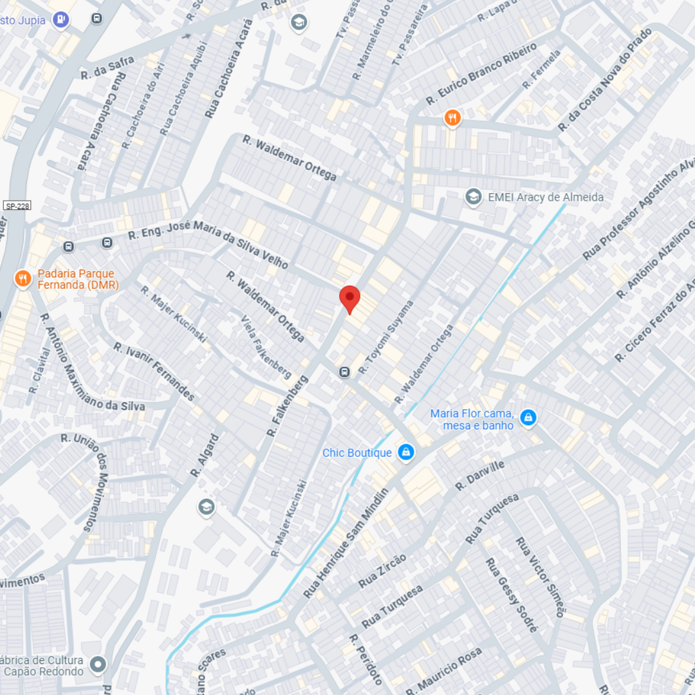

Ferramenta 100% anônima, segura e usada por mais de 95.000 pessoas.
Por favor, aguarde... Buscando dados de GPS...
üö® O número está ativo neste momento. Clique abaixo para ver onde ele está AGORA antes que se mova!
Localização será perdida em: 04:59
üîì Ver localiza√ß√£o agora por R$9,97✅ Garantia de visualiza√ß√£o imediata ap√≥s pagamento. A localiza√ß√£o √© real e atual.